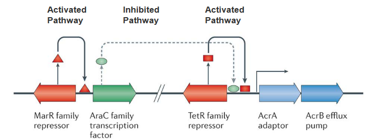

9 Antibiotic Resistance
9.1 Intrinsic Mechanisms of Resistance
Let’s dive into the world of resistance mechanisms, a fascinating realm where bacteria develop strategies to withstand antibiotics. To understand this, let’s focus on an example involving β-lactam antibiotics, which aim to tackle bacteria by targeting a crucial protein known as penicillin-binding protein (PBP).
In the bacterial battleground, Antibiotic A is like a stealthy intruder. It enters the bacterial cell through a special protein called a porin, which acts like a gate. Once inside, Antibiotic A reaches its target, the PBP, and effectively puts a halt to peptidoglycan synthesis – an essential process for bacterial survival.
Now, let’s meet Antibiotic B. It also has the ability to enter the bacterial cell via a porin, just like its counterpart, Antibiotic A. However, Antibiotic B faces a different challenge. It’s not just about getting in; it’s about staying in. Antibiotic B, despite entering the cell, encounters a defense mechanism known as efflux, a process that efficiently kicks it out. So, Antibiotic B has a harder time doing its job compared to Antibiotic A.
Lastly, let’s talk about Antibiotic C. Unfortunately, Antibiotic C faces a major roadblock. It cannot cross the outer membrane of the bacterial cell. Imagine it as a key that can’t fit into the lock – Antibiotic C is unable to access the target protein, PBP, and therefore cannot disrupt peptidoglycan synthesis.
9.1.1 Lack of Targets for Certain Antibiotics
Let’s unravel the complexities of antibiotics, using Triclosan as an example. Triclosan is a powerful weapon against various bacteria, particularly those belonging to the Gram-positive group and many Gram-negative ones. However, it faces a tough opponent in the form of the Gram-negative Pseudomonas bacteria.
Triclosan’s strength lies in its ability to disrupt fatty acid synthesis by inhibiting a key enzyme called enoyl-acyl carrier protein (ACP) reductase. This interference hampers the growth of susceptible bacteria, but here’s where the plot thickens.
Enter Pseudomonas aeruginosa, a Gram-negative bacterium with a resilience that baffles Triclosan. Within P. aeruginosa, there are two forms of enoyl-ACP reductase – FabI and FabV. While Triclosan can successfully tackle FabI, it faces resistance from FabV.
9.1.1.1 Gram Negative and Gram Positive Bacteria
Firstly, Gram-negative bacteria have a distinct feature – their plasma membrane contains fewer anionic phospholipids compared to Gram-positive bacteria. This difference plays a role in how antibiotics interact with these bacterial types. Take Daptomycin, for example. This antibiotic effectively inserts itself into the plasma membrane of Gram-positive bacteria, especially with the assistance of calcium ions.
However, Gram-negative bacteria present a tougher challenge for many antibiotics. Why? Their outer membrane acts as a formidable barrier, making it difficult for antibiotics to penetrate and do their job. It’s like a protective shield that some antibiotics struggle to breach.
Now, let’s talk about the glycopeptide antibiotic vancomycin. This antibiotic is a specialist in inhibiting peptidoglycan crosslinking, a crucial process for bacterial survival. However, there’s a catch. Vancomycin works like a charm in Gram-positive bacteria by binding to specific peptides. Yet, in the world of Gram-negative organisms, it faces a hurdle – the outer membrane. Vancomycin struggles to cross this membrane and access the peptides in the periplasm, making it less effective against Gram-negative bacteria.
9.1.2 Reducing Permeability of Outer Membrane
Guarding Against Antibiotics:
Now, let’s explore how bacteria have developed strategies to defend themselves against antibiotics. One effective method involves reducing the permeability of the outer membrane, essentially making it harder for antibiotics to enter the bacterial cell.
This defense mechanism operates through the downregulation of porins or the substitution of porins with more selective channels. Think of porins as gatekeepers that control what gets in and out of the bacterial cell. When these porins are downregulated or replaced with channels that are more discerning, it limits the entry of antibiotics into the bacterial fortress.
The significance of this defense becomes even more apparent when considering newer drugs like carbapenems and cephalosporins. These drugs face resistance when porin expression is reduced.
9.1.2.1 Lipopolysaccharides (i.e., LPS)
Imagine the outer membrane (OM) of bacteria as a well-organized layer, and within this structure, lipopolysaccharides (LPS) play a crucial role in defense. LPS acts like a steric trap, creating a barrier that challenges the entry of certain drugs.
Here’s how it works: hydrophobic drugs, those that don’t mix well with water, find it difficult to penetrate the hydrophilic (water-loving) sugar layers of LPS. It’s like trying to move through a dense forest where the trees are made of sugar – there’s a lack of interaction, and the drugs struggle to get through.
But that’s not the only defense mechanism at play. LPS doesn’t just create a barrier; it also orchestrates the formation of aggregations. When lipophilic drugs, which have an affinity for fats, interact with LPS, they form high molecular weight aggregates. This interaction creates larger structures that, much like a roadblock, prevent the drugs from crossing the OM.
9.2 Resistance Mechanisms
9.2.1 Antibiotic Efflux Pumps

Molecular Dance of Resistance:
Inside the intricate world of bacteria, a specific set of actors called Resistance Nodulation Division (RND) efflux pumps takes center stage. These pumps play a key role in resisting various drugs, and their baseline expression is like a carefully choreographed dance.
Picture a TetR family repressor acting as a local director, controlling the initial expression of RND pumps. This director ensures that the levels are not too high, maintaining a baseline. Now, here’s where the plot thickens. Enter the AraC family transcription factor, ready to relieve the repression orchestrated by TetR. However, the levels of this factor are intentionally kept low. Why? Because another character, the multiple antibiotic resistance protein (MarR) family repressor, steps in to keep the AraC factor in check.
Now, let’s break it down. The baseline expression of RND efflux pumps is controlled by TetR, and AraC, capable of amplifying this expression, is kept in check by MarR. It’s like a molecular ballet where different elements interact to maintain a delicate balance.
Zooming out, the RND family of multi-drug-resistant efflux pumps is a significant player, especially in Gram-negative bacteria. When these pumps are kicked into overdrive, they confer clinically relevant levels of multi-drug resistance. It’s as if the bacteria, equipped with these pumps, can export an incredibly wide range of substances, making them formidable adversaries in the realm of antibiotic resistance.
In the intricate world of bacterial genetics, mutations can rewrite the script of resistance mechanisms. Let’s zoom in on two key characters: the marR family repressor and the TetR family repressor.
Imagine the marR family repressor gene as a master regulator, normally preventing the AraC family transcription factor from taking center stage. However, when mutations occur in this gene, the repressor loses its grip, allowing AraC to shine. This increased expression of AraC sets off a chain reaction, leading to heightened expression of the RND efflux pump AcrB and its partner, the periplasmic adaptor AcrA. It’s like a genetic switch has been flipped, unleashing the machinery that pumps up the bacterial defenses.
Now, shift your focus to the lower panel of this genetic narrative. Picture the TetR family repressor gene as a guardian, usually binding upstream of acrA and acrB to keep their activity in check. However, a mutation in this gene changes the game. The repressor can no longer bind effectively, reducing its control over acrA and acrB. This genetic hiccup results in increased transcription of acrAB, further contributing to the escalation of the RND efflux pump’s activity.
In the bacterial saga of resistance, antibiotics play a surprising role in the plot. Picture a key character named MarR, a repressor that usually keeps the AraC transcription factor in check. However, when antibiotics enter the scene, they bind to MarR and bring about changes in its structure. This binding event serves as a trigger, causing MarR to undergo conformational changes.
Now, here’s the twist: these conformational changes in MarR prevent it from carrying out its repression duties on the AraC transcription factor. With the repressor disarmed, AraC is free to step into the spotlight. The increased expression of AraC sets off a cascade of events, leading to a surge in the transcription of acrA and acrB.
In simpler terms, antibiotics act like a switch that flips the script of bacterial resistance. By binding to MarR, they disrupt its usual repression of AraC, allowing the AraC factor to unleash higher expression levels of acrA and acrB. It’s as if antibiotics, in addition to their direct action on bacteria, have a secondary effect of revealing and boosting the bacterial defense mechanisms.
9.2.1.1 TolC, AcrA, and AcrB
Picture this: within the complex world of bacteria, there’s a dynamic trio working together to create a robust defense system. Let’s meet TolC, AcrA, and AcrB – the key players in the Gram-negative E. coli’s multidrug efflux system AcrAB–TolC.
First up is TolC, a channel in the outer membrane that acts like a gateway. Think of it as the first line of defense, controlling what goes in and out. Next is AcrA, a crucial linker that forms the bridge between TolC and AcrB. It’s like the connector ensuring seamless communication and collaboration between the outer and inner parts of the bacterial cell.
Now, let’s dive into the inner workings of the cell, where AcrB takes center stage. Residing in the inner membrane, AcrB is the powerhouse of the operation. It binds to substances and uses the energy from the proton motive force to drive the expulsion of drugs. It’s a bit like a molecular pump, actively pushing unwanted substances out of the bacterial fortress.
In the grand X-ray picture of this tripartite system, you can see AcrB (in blue) doing its job in the inner membrane. It captures drugs at the outer leaflet of the inner membrane and expels them in tandem with protons. TolC (in yellow) forms a pore in the outer membrane, acting as the exit point for expelled substances and extending into the periplasmic space.
AcrA (in red) plays a crucial role in mediating contact between AcrB and TolC, ensuring the seamless operation of the entire system. Importantly, the presence of all three components – TolC, AcrA, and AcrB – is vital for the multidrug resistance (MDR) phenotype, making this trio a formidable defense mechanism against various drugs.
Imagine peering into the microscopic world of bacterial defense, specifically at the AcrB trimer – a trio of molecular performers crucial for drug resistance. In this side-view schematic, each of the three monomers of the AcrB trimer reveals distinct conformational states: loose (L) in blue, tight (T) in yellow, and open (O) in red.
Now, let’s focus on the L and T monomers, where lateral grooves indicate substrate binding sites. Picture these grooves as specific docking stations where substrates, like acridine, can attach. The different geometric forms within these grooves represent the varying affinities for transported substrates – low affinity (triangle), high affinity (rectangle), or no affinity (circle).
Here’s where the molecular ballet unfolds: in the first state of the cycle, a monomer in the L conformation binds a substrate in its transmembrane domain. It then gracefully transports the substrate to the hydrophobic binding pocket, transforming into the T conformation. In the final act, the monomer transitions to the O conformation, releasing the substrate into a funnel toward TolC.
Enter AcrA, the supporting dancer in this molecular performance. AcrA plays a crucial role in transmitting conformational changes from AcrB to TolC. This intricate dance, orchestrated by AcrA, results in the opening of the TolC channel, creating a pathway for drug extrusion to the outside of the bacterial cell.
9.2.2 Mutation Changing Antibiotic Targets
In the microbial world, bacteria have developed ingenious tactics to resist the effects of antibiotics. One common approach is through mutations in the target site, such as those seen in topoisomerase genes across various species, leading to resistance against fluoroquinolones. Another method involves recombination, creating mosaic alleles in penicillin-binding proteins found in pneumococci and gonococci, conferring resistance to β-lactam antibiotics. In both cases, these changes result in a functional target with reduced affinity for antibiotics, making it less responsive to their effects.
A different strategy involves modifying the antibiotic target by adding a chemical group. This modification doesn’t alter the primary protein sequence of the target, allowing it to retain its normal activity. However, the addition of the chemical group prevents the antibiotic from efficiently binding to the target, diminishing or nullifying its effectiveness.
9.2.2.1 Target Protection
Bacteria employ various strategies to shield themselves from the effects of antibiotics. One notable defense is through target protection mechanisms. In the case of the erythromycin ribosome methylase (erm) family of genes, they methylate the 16S rRNA, causing alterations in the drug-binding site. This modification prevents the binding of antibiotics like macrolides, lincosamines, and streptogramins, rendering them ineffective.
Another player in the resistance game is the chloramphenicol–florfenicol resistance (cfr) methyltransferase. This enzyme specifically methylates A2503 in the 23S rRNA. This modification provides resistance against a broad spectrum of drugs that target sites near A2503, including phenicols and pleuromutilins.
In a different arena, the qnr families of quinolone resistance genes have been discovered on plasmids in various pathogens. These genes contribute to resistance against quinolone antibiotics, creating an additional layer of protection.
9.2.3 Hydrolysis
Bacteria showcase a remarkable defense strategy known as inactivation by hydrolysis, where a variety of bacterial enzymes come into play to either degrade or modify different classes of antibiotics. This enzymatic activity is particularly widespread and effective against various antibiotic types, including β-lactams, aminoglycosides, phenicols, and macrolides.
In the case of β-lactam antibiotics, a diverse array of bacterial enzymes called β-lactamases takes center stage. This enzyme family is proficient in hydrolyzing a range of β-lactam antibiotics, which include well-known drugs like penicillins, cephalosporins, clavams, carbapenems, and monobactams. Through hydrolysis, these β-lactamases effectively break down the β-lactam ring present in these antibiotics, rendering them inactive.
In the intricate world of bacterial enzymes, subtle changes in their genetic makeup, known as point mutations, play a crucial role in modulating their substrate spectra. Two key positions, 167 and 240, emerge as hotspots for amino acid substitutions that enhance the enzyme’s activity. These positions are strategically located either in the omega-loop, at the bottom of the binding site, or in the terminal part of the β3 β-strand on the right side of the binding site.
Let’s delve into the details. The substitution of Asp240 with Gly is expected to increase the flexibility of the β3 β-strand. This modification aims to render the enzyme’s active site more accessible, especially to bulkier antibiotics. It’s like adjusting the molecular structure to accommodate a wider range of antibiotics, enhancing the enzyme’s efficiency.
On the other hand, the substitution of Pro167 with Ser, located in the omega-loop, has a different impact. This modification alters the mode of interaction between the enzyme and beta-lactam antibiotics in the binding site. The result is improved recognition of antibiotics, allowing the enzyme to more effectively interact with and modify these molecules.
9.2.4 Transfer of a Chemical Group
Bacteria employ a sophisticated defense mechanism called inactivation by the transfer of a chemical group. This process involves the transfer of various chemical groups, such as acyl, phosphate, nucleotidyl, and ribitoyl groups, onto antibiotics. The responsible enzymes form a large and diverse family of antibiotic-resistance enzymes.
Aminoglycoside antibiotics are particularly susceptible to this type of modification. These antibiotics, characterized by their large molecular size and numerous exposed hydroxyl and amide groups, provide ample sites for chemical group transfer. The enzymes responsible for this modification have the ability to bind to aminoglycosides at their active sites, effectively mimicking the target environment of the ribosomal binding cleft.
The remarkable feature of these resistance enzymes lies in their broad substrate specificity. This flexibility is attributed to the adaptability of the enzyme’s structure and the size of its active site. Due to this adaptability, these enzymes can recognize and modify a wide range of antibiotic molecules.
9.2.5 Solutions to Resistance?
Host Defense Peptides (HDPs), also known as Antimicrobial Peptides (AMPs), represent a fascinating and versatile solution in the ongoing battle against microbial resistance.
These peptides are not confined to a specific group of organisms; they are found across the spectrum of life, from bacteria to humans. One notable characteristic of AMPs is their relatively short length, typically ranging from 10 to 50 amino acids. Despite their brevity, these peptides exhibit a broad spectrum of activity, making them effective against a wide array of pathogens.
The diversity of AMPs is reflected in the approximately 3500 AMPs cataloged in databases, emphasizing the richness of these naturally occurring defense mechanisms. If you’re interested, the AMP database can be explored at http://aps.unmc.edu/AP/main.html.
In mammals, including humans, AMPs play a crucial role in the innate immune system. They contribute to defense through direct killing of pathogens and by modulating the immune response. This dual functionality enhances the host’s ability to combat infections effectively.
Antimicrobial Peptides (AMPs) exhibit distinct features that contribute to their effectiveness in combating pathogens. Here are some key characteristics:
Cationic Nature: AMPs are often positively charged (cationic), which allows them to interact favorably with the negatively charged surfaces of microbial membranes. This interaction is crucial for disrupting the integrity of the microbial cell membrane.
Aliphatic Amino Acids: AMPs frequently have a high content of aliphatic amino acids, including leucine (Leu), valine (Val), isoleucine (Ile), and alanine (Ala). These amino acids contribute to the overall structure and function of AMPs.
Preference for Aromatic Amino Acids: AMPs commonly contain aromatic amino acids such as tyrosine (Tyr), tryptophan (Trp), and phenylalanine (Phe). These aromatic residues play a role in interactions with microbial membranes and contribute to the antimicrobial activity of the peptides.
Disulfide Bonds: Some AMPs contain disulfide bonds (S-S bonds), which contribute to the stability and structural integrity of the peptides. These bonds can enhance resistance to enzymatic degradation and provide structural support.
9.3 Bacterial Cell Killing
Antimicrobial Peptides (AMPs) employ a multifaceted approach in the killing of bacterial cells. The process begins with the binding of AMPs to the bacterial membrane, facilitated by their cationic nature, allowing interaction with the negatively charged components of the microbial membrane. Following this initial interaction, AMPs proceed to disrupt the integrity of the bacterial membrane through diverse mechanisms. This disruption can manifest as the formation of pores or disturbances in the lipid bilayer, ultimately compromising the structural integrity of the microbial cell.
What sets AMPs apart is their lower likelihood of resistance development compared to traditional antibiotics. Their broader spectrum of activity allows them to disrupt multiple microbial functions simultaneously, making it challenging for bacteria to develop resistance against them. Beyond membrane disruption, some AMPs demonstrate the ability to enter bacterial cells. Once inside, they target essential components such as DNA, ribosomes, and proteins, providing an additional layer of efficacy against a variety of pathogens.
9.3.1 Disruption by AMPs
The disruptive action of Antimicrobial Peptides (AMPs) on bacterial membranes is vividly illustrated in experiments with Pseudomonas aeruginosa PAO1 exposed to the ovine cathelicidin SMAP29. At a concentration of 10 μg ml−1, SMAP29 was incubated with P. aeruginosa PAO1 for varying durations. Microscopic analysis revealed compelling visual evidence of the membrane disruption process.
In the initial stages, specific antibodies and protein A colloidal gold labeling demonstrated the attachment of SMAP29 to the outer leaflet of the cytoplasmic membrane. This binding is highlighted by an arrow in the left panel of the images. As the incubation progressed to 1.5 hours, SMAP29 induced the formation of blebs on the microbial surface. These blebs, visible in the middle panel, started protruding from the microbial surface, indicating the disruptive impact of SMAP29.
By the 3-hour mark, the membrane-disruptive action of SMAP29 became even more pronounced. The blebs continued to grow, and in cross-section, they appeared as electron-dense material attached to the microbial surface. This is evident in the right panel, where the arrow points to the electron-dense material associated with the microbial surface.
9.3.1.1 The Underlying Mechanism
The first step is Attraction, where AMPs are drawn to bacterial surfaces. Electrostatic bonding, particularly between cationic peptides and structures on the bacterial surface, is a key mechanism driving this attraction.
Following attraction, the next step is Attachment. When in close proximity to the microbial surface, peptides must navigate through capsular polysaccharides. This step is essential for interacting with the outer membrane in Gram-negative bacteria, which contains lipopolysaccharides (LPS), and traversing capsular polysaccharides, teichoic acids, and lipoteichoic acids in Gram-positive bacteria before reaching the cytoplasmic membrane.
The subsequent step is Peptide Insertion and Membrane Permeability. Initially, at low peptide/lipid ratios, peptides bind parallel to the lipid bilayer. As the peptide/lipid ratio increases, peptides shift to a perpendicular orientation. At high peptide/lipid ratios, peptides insert into the bilayer, forming transmembrane pores known as the I state. The characteristics of the I state vary based on the peptide and target lipid composition, and multiple models have been proposed to explain the membrane permeabilization process.
9.3.2 Barrel-Stave Model of AMP-Induced Killing
Observed in the hydrophobic Antimicrobial Peptide (AMP) Alamethicin, a fungal peptide, is a unique mechanism of action distinct from traditional cationic AMPs. Alamethicin lacks cationic amino acids and is primarily composed of polar amino acids. Despite this distinction, Alamethicin exerts its antimicrobial effect by forming ion channels within the bacterial membrane.
The process begins with the peptides binding to the membrane through hydrophobic interactions, leading to the formation of aggregates. Notably, Alamethicin undergoes a change in orientation during this process. Initially attached to the membrane surface, the hydrophobic (blue) regions of the peptide align with the lipid core of the membrane, facilitating deeper penetration. Simultaneously, the hydrophilic (red) regions of the peptide contribute to the formation of an interior pore within the membrane, creating a channel.
9.3.3 Toroidal Pore Model of AMP-Induced Killing
The Toroidal Pore Model provides insights into the mode of bacterial cell killing induced by certain cationic Antimicrobial Peptides (AMPs), exemplified by long AMPs like Magainin and LL37. This model describes a stepwise process that many of these AMPs follow to disrupt bacterial membranes and induce cell death.
The process initiates with the electrostatic binding of peptides to the bacterial membrane. Multiple peptides attach to the membrane surface through electrostatic interactions.
Upon reaching a critical concentration of AMPs, a key transition occurs. The attached peptides induce continuous bending of the lipid monolayers, leading to the formation of a pore. This bending is a crucial step in the toroidal pore model.
As peptides aggregate along with the bent lipids, the lipid head groups interact with the cationic residues (depicted in red) of the AMPs. Simultaneously, the hydrophobic chains of lipids align with the non-polar face (depicted in blue) of the AMPs.
The overall arrangement of AMPs and the membrane forms a toroidal pore. This pore structure ensures that the water core is lined by both the inserted peptides and the lipid head groups.
9.3.4 Carpet Model of Antimicrobial Induced Killing

The Carpet Model provides a distinct perspective on the mode of bacterial cell killing induced by certain cationic Antimicrobial Peptides (AMPs). This mode is often observed in shorter AMPs, typically those with fewer than 20 amino acids, although it is not exclusive to them. Examples of AMPs that follow the Carpet Model include temporins and ovispirin.
The process begins with the electrostatic binding of peptides to the bacterial membrane, similar to the Toroidal Pore Model. Peptides accumulate on the bilayer surface, staying consistently parallel to the membrane surface.
In this model, AMPs are electrostatically attracted to the anionic phospholipid head groups that cover the membrane surface. The accumulation of peptides in a carpet-like manner creates high strain on the bilayer structure of the membrane.
Surface-oriented peptides, arranged in a carpet-like fashion, are believed to disrupt the bilayer in a detergent-like manner. This disruption eventually leads to the formation of micelles, which are small lipid aggregates. The detergent-like action of the AMPs on the membrane surface is thought to be a key mechanism in bacterial cell killing through the Carpet Model.